mode: rehearsal · rehearsal scores fold 5 (pseudo-test); the locked fold 1 is scored only at the final run (G3). Primary endpoint: continuous improvement per arm (mexiletine = relative myotonia change). Secondary: responder label. Gradient boosting uses scikit-learn HistGradientBoosting (XGBoost's role; no OpenMP runtime in this environment).
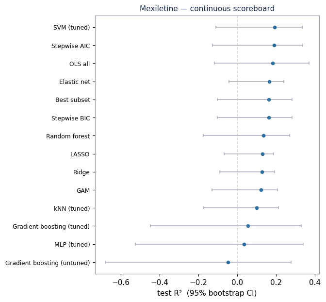
| method | tier | R2 | RMSE | MAE |
|---|---|---|---|---|
| SVM (tuned) | prediction | +0.193 | 0.140 | 0.116 |
| Stepwise AIC | inference | +0.190 | 0.140 | 0.115 |
| OLS all | inference | +0.183 | 0.141 | 0.120 |
| Elastic net | inference | +0.166 | 0.143 | 0.116 |
| Stepwise BIC | inference | +0.163 | 0.143 | 0.116 |
| Best subset | inference | +0.163 | 0.143 | 0.116 |
| Random forest | prediction | +0.135 | 0.145 | 0.120 |
| LASSO | inference | +0.130 | 0.146 | 0.118 |
| Ridge | inference | +0.126 | 0.146 | 0.118 |
| GAM | inference | +0.122 | 0.146 | 0.117 |
| kNN (tuned) | prediction | +0.101 | 0.148 | 0.117 |
| Gradient boosting (tuned) | prediction | +0.055 | 0.152 | 0.126 |
| MLP (tuned) | prediction | +0.036 | 0.153 | 0.128 |
| Gradient boosting (untuned) | prediction | -0.047 | 0.160 | 0.133 |
Compact models on consensus covariates:
| n_terms | terms | R2 | RMSE | MAE |
|---|---|---|---|---|
| 1 | ctg_repeats | 0.163 | 0.143 | 0.116 |
| 2 | ctg_repeats+myotonia_severity | 0.219 | 0.138 | 0.112 |
| 3 | ctg_repeats+myotonia_severity+disease_duration | 0.242 | 0.136 | 0.111 |
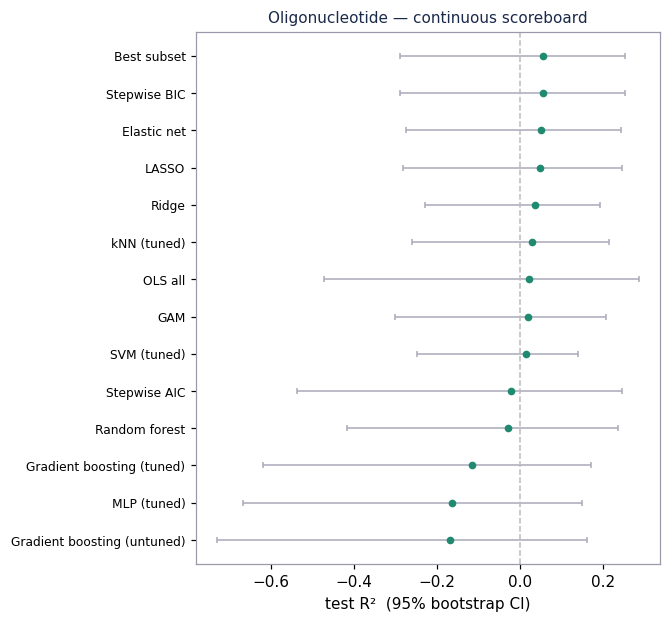
| method | tier | R2 | RMSE | MAE |
|---|---|---|---|---|
| Stepwise BIC | inference | +0.057 | 1.566 | 1.262 |
| Best subset | inference | +0.057 | 1.566 | 1.262 |
| Elastic net | inference | +0.051 | 1.571 | 1.276 |
| LASSO | inference | +0.048 | 1.574 | 1.279 |
| Ridge | inference | +0.037 | 1.583 | 1.274 |
| kNN (tuned) | prediction | +0.029 | 1.589 | 1.263 |
| OLS all | inference | +0.022 | 1.595 | 1.342 |
| GAM | inference | +0.020 | 1.597 | 1.312 |
| SVM (tuned) | prediction | +0.014 | 1.601 | 1.279 |
| Stepwise AIC | inference | -0.020 | 1.629 | 1.351 |
| Random forest | prediction | -0.028 | 1.635 | 1.279 |
| Gradient boosting (tuned) | prediction | -0.115 | 1.703 | 1.387 |
| MLP (tuned) | prediction | -0.162 | 1.739 | 1.347 |
| Gradient boosting (untuned) | prediction | -0.169 | 1.744 | 1.405 |
Compact models on consensus covariates:
| n_terms | terms | R2 | RMSE | MAE |
|---|---|---|---|---|
| 1 | ctg_repeats | 0.002 | 1.612 | 1.277 |
| 2 | ctg_repeats+disease_duration | 0.057 | 1.566 | 1.262 |
| 3 | ctg_repeats+disease_duration+somatic_mosaicism_index | 0.031 | 1.587 | 1.295 |
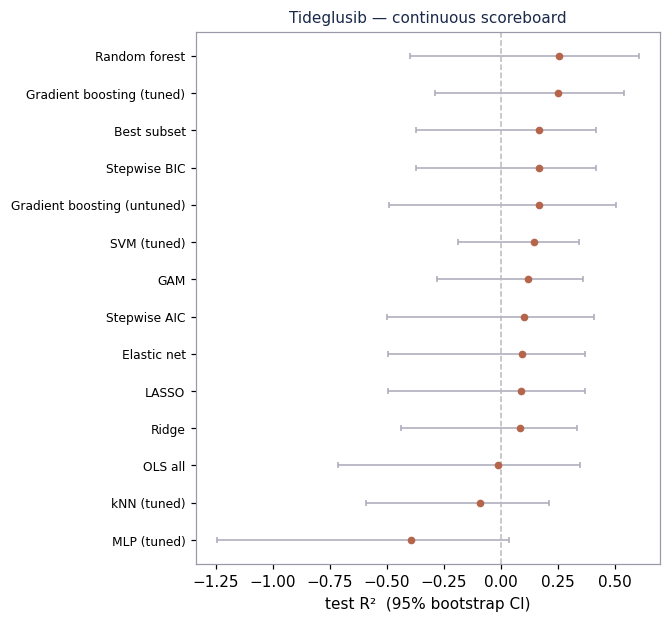
| method | tier | R2 | RMSE | MAE |
|---|---|---|---|---|
| Random forest | prediction | +0.255 | 2.501 | 1.895 |
| Gradient boosting (tuned) | prediction | +0.251 | 2.508 | 2.012 |
| Stepwise BIC | inference | +0.170 | 2.641 | 2.316 |
| Best subset | inference | +0.170 | 2.641 | 2.316 |
| Gradient boosting (untuned) | prediction | +0.167 | 2.645 | 2.124 |
| SVM (tuned) | prediction | +0.148 | 2.675 | 2.272 |
| GAM | inference | +0.119 | 2.721 | 2.255 |
| Stepwise AIC | inference | +0.103 | 2.745 | 2.342 |
| Elastic net | inference | +0.092 | 2.761 | 2.412 |
| LASSO | inference | +0.090 | 2.765 | 2.413 |
| Ridge | inference | +0.087 | 2.770 | 2.434 |
| OLS all | inference | -0.011 | 2.914 | 2.501 |
| kNN (tuned) | prediction | -0.092 | 3.029 | 2.483 |
| MLP (tuned) | prediction | -0.394 | 3.422 | 2.908 |
Compact models on consensus covariates:
| n_terms | terms | R2 | RMSE | MAE |
|---|---|---|---|---|
| 1 | cognitive_function | 0.233 | 2.538 | 2.217 |
| 2 | cognitive_function+disease_duration | 0.243 | 2.522 | 2.292 |
| 3 | cognitive_function+disease_duration+muscle_strength | 0.215 | 2.568 | 2.291 |
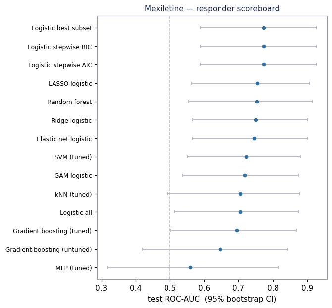
| method | tier | ROC_AUC | Recall | Precision | Accuracy | cutoff |
|---|---|---|---|---|---|---|
| Logistic stepwise AIC | inference | 0.773 | 0.100 | 0.500 | 0.688 | 0.500 |
| Logistic stepwise BIC | inference | 0.773 | 0.100 | 0.500 | 0.688 | 0.500 |
| Logistic best subset | inference | 0.773 | 0.100 | 0.500 | 0.688 | 0.500 |
| LASSO logistic | inference | 0.755 | 1.000 | 0.417 | 0.562 | 0.305 |
| Random forest | prediction | 0.752 | 0.400 | 0.500 | 0.688 | 0.454 |
| Ridge logistic | inference | 0.750 | 1.000 | 0.400 | 0.531 | 0.272 |
| Elastic net logistic | inference | 0.745 | 0.700 | 0.500 | 0.688 | 0.299 |
| SVM (tuned) | prediction | 0.723 | 0.400 | 0.571 | 0.719 | 0.317 |
| GAM logistic | inference | 0.718 | 0.800 | 0.421 | 0.594 | 0.236 |
| Logistic all | inference | 0.705 | 0.300 | 0.500 | 0.688 | 0.500 |
| kNN (tuned) | prediction | 0.705 | 0.700 | 0.412 | 0.594 | 0.264 |
| Gradient boosting (tuned) | prediction | 0.695 | 0.700 | 0.467 | 0.656 | 0.269 |
| Gradient boosting (untuned) | prediction | 0.645 | 0.500 | 0.385 | 0.594 | 0.266 |
| MLP (tuned) | prediction | 0.559 | 0.500 | 0.417 | 0.625 | 0.511 |
Compact models on consensus covariates:
| n_terms | terms | cutoff | ROC_AUC | Recall | Precision | Accuracy |
|---|---|---|---|---|---|---|
| 1 | myotonia_severity | 0.247 | 0.782 | 0.9 | 0.529 | 0.719 |
| 2 | myotonia_severity+ctg_repeats | 0.239 | 0.764 | 0.9 | 0.450 | 0.625 |
| 3 | myotonia_severity+ctg_repeats+disease_duration | 0.257 | 0.777 | 0.9 | 0.500 | 0.688 |
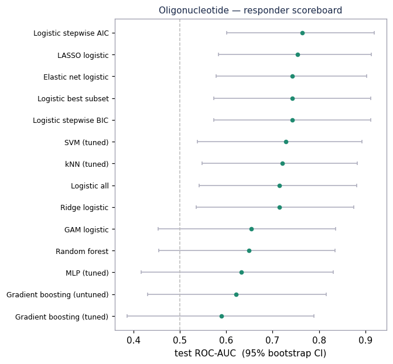
| method | tier | ROC_AUC | Recall | Precision | Accuracy | cutoff |
|---|---|---|---|---|---|---|
| Logistic stepwise AIC | inference | 0.764 | 0.571 | 0.667 | 0.706 | 0.500 |
| LASSO logistic | inference | 0.754 | 0.571 | 0.533 | 0.618 | 0.500 |
| Logistic stepwise BIC | inference | 0.743 | 0.571 | 0.667 | 0.706 | 0.500 |
| Logistic best subset | inference | 0.743 | 0.571 | 0.667 | 0.706 | 0.500 |
| Elastic net logistic | inference | 0.743 | 0.714 | 0.526 | 0.618 | 0.356 |
| SVM (tuned) | prediction | 0.729 | 1.000 | 0.412 | 0.412 | 0.387 |
| kNN (tuned) | prediction | 0.721 | 0.857 | 0.600 | 0.706 | 0.406 |
| Logistic all | inference | 0.714 | 0.500 | 0.467 | 0.559 | 0.500 |
| Ridge logistic | inference | 0.714 | 0.643 | 0.600 | 0.676 | 0.419 |
| GAM logistic | inference | 0.654 | 0.429 | 0.545 | 0.618 | 0.587 |
| Random forest | prediction | 0.648 | 0.857 | 0.545 | 0.647 | 0.366 |
| MLP (tuned) | prediction | 0.632 | 0.357 | 0.556 | 0.618 | 0.363 |
| Gradient boosting (untuned) | prediction | 0.621 | 0.357 | 0.500 | 0.588 | 0.637 |
| Gradient boosting (tuned) | prediction | 0.589 | 0.286 | 0.400 | 0.529 | 0.536 |
Compact models on consensus covariates:
| n_terms | terms | cutoff | ROC_AUC | Recall | Precision | Accuracy |
|---|---|---|---|---|---|---|
| 1 | ctg_repeats | 0.363 | 0.725 | 0.714 | 0.556 | 0.647 |
| 2 | ctg_repeats+disease_duration | 0.344 | 0.743 | 0.714 | 0.588 | 0.676 |
| 3 | ctg_repeats+disease_duration+somatic_mosaicism_index | 0.417 | 0.750 | 0.643 | 0.562 | 0.647 |
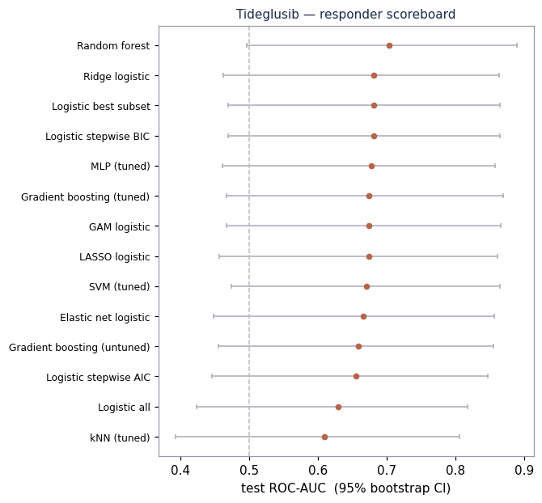
| method | tier | ROC_AUC | Recall | Precision | Accuracy | cutoff |
|---|---|---|---|---|---|---|
| Random forest | prediction | 0.704 | 0.667 | 0.769 | 0.758 | 0.586 |
| Logistic stepwise BIC | inference | 0.681 | 0.600 | 0.692 | 0.697 | 0.500 |
| Logistic best subset | inference | 0.681 | 0.600 | 0.692 | 0.697 | 0.500 |
| Ridge logistic | inference | 0.681 | 0.733 | 0.688 | 0.727 | 0.567 |
| MLP (tuned) | prediction | 0.678 | 0.867 | 0.481 | 0.515 | 0.293 |
| LASSO logistic | inference | 0.674 | 0.733 | 0.611 | 0.667 | 0.544 |
| GAM logistic | inference | 0.674 | 0.733 | 0.611 | 0.667 | 0.436 |
| Gradient boosting (tuned) | prediction | 0.674 | 0.733 | 0.688 | 0.727 | 0.496 |
| SVM (tuned) | prediction | 0.670 | 0.667 | 0.556 | 0.606 | 0.409 |
| Elastic net logistic | inference | 0.667 | 0.733 | 0.733 | 0.758 | 0.541 |
| Gradient boosting (untuned) | prediction | 0.659 | 0.733 | 0.688 | 0.727 | 0.602 |
| Logistic stepwise AIC | inference | 0.656 | 0.733 | 0.611 | 0.667 | 0.500 |
| Logistic all | inference | 0.630 | 0.733 | 0.579 | 0.636 | 0.500 |
| kNN (tuned) | prediction | 0.609 | 0.467 | 0.778 | 0.697 | 0.700 |
Compact models on consensus covariates:
| n_terms | terms | cutoff | ROC_AUC | Recall | Precision | Accuracy |
|---|---|---|---|---|---|---|
| 1 | cognitive_function | 0.504 | 0.731 | 0.733 | 0.733 | 0.758 |
| 2 | cognitive_function+myotonia_severity | 0.503 | 0.681 | 0.600 | 0.692 | 0.697 |
| 3 | cognitive_function+myotonia_severity+ck_level | 0.524 | 0.715 | 0.600 | 0.643 | 0.667 |
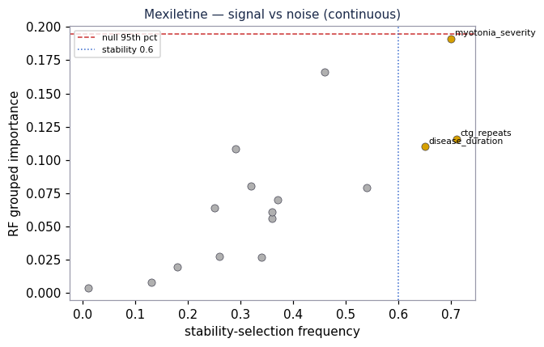
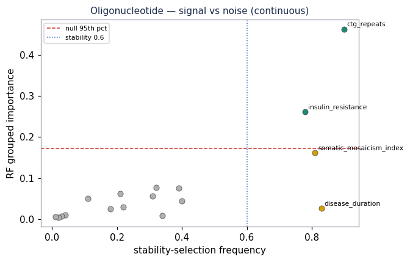
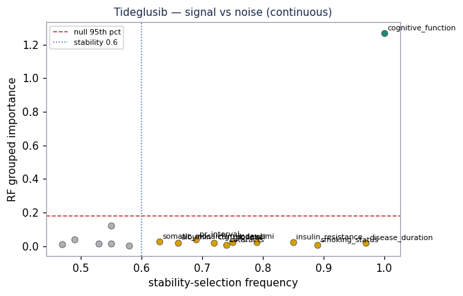
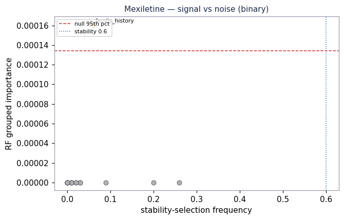
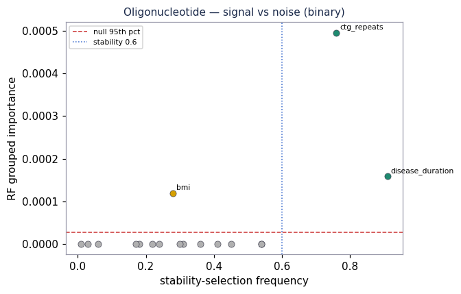
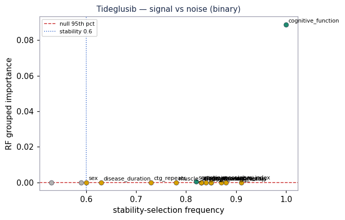
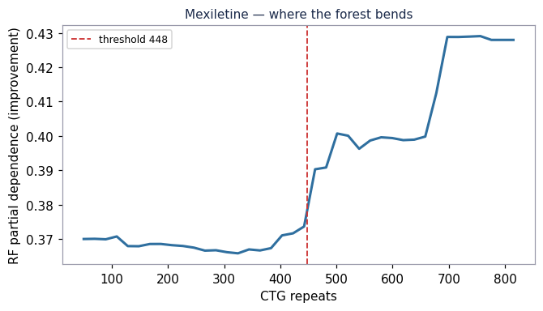
arm: Mexiletine leading numeric consensus term: ctg_repeats data-chosen threshold (depth-1 tree): ctg_repeats > 448.5 enriched subgroup mean improvement: 0.467 (other subgroup: 0.344) subgroup size in training: 24/96 test R2, single linear term (ctg_repeats): +0.163 test R2, single indicator 1[ctg_repeats > 448]: +0.138
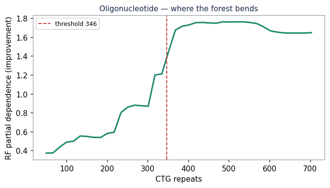
arm: Oligonucleotide leading numeric consensus term: ctg_repeats data-chosen threshold (depth-1 tree): ctg_repeats > 346.5 enriched subgroup mean improvement: 2.026 (other subgroup: 0.384) subgroup size in training: 41/102 test R2, single linear term (ctg_repeats): +0.002 test R2, single indicator 1[ctg_repeats > 346]: -0.071
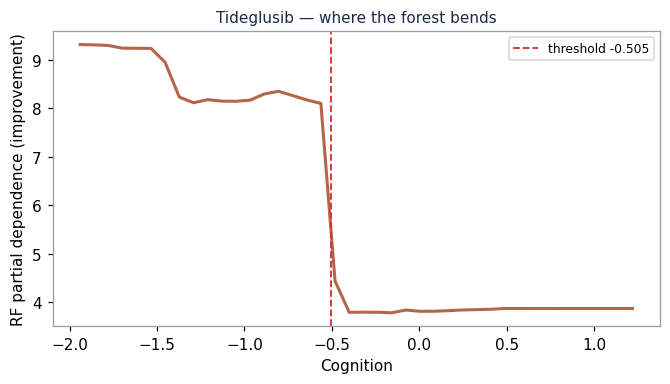
arm: Tideglusib leading numeric consensus term: cognitive_function data-chosen threshold (depth-1 tree): cognitive_function <= -0.505 enriched subgroup mean improvement: 8.277 (other subgroup: 3.457) subgroup size in training: 48/102 test R2, single linear term (cognitive_function): +0.233 test R2, single indicator 1[cognitive_function <= -0.505]: +0.377
# Split-sensitivity verdict - Across 20 seeds, the median per-method SD of test R² is **0.131** — rankings inside this band are ties. - Mexiletine: R² SD ranges 0.074–0.260 (widest: Gradient boosting (untuned)). - Oligonucleotide: R² SD ranges 0.064–0.176 (widest: OLS all). - Tideglusib: R² SD ranges 0.093–0.181 (widest: OLS all). - Cross-seed selection frequency (covariate stability): - Mexiletine: myotonia_severity 85%, disease_duration 75%, insulin_resistance 60%, ctg_repeats 56%, sex 42% - Oligonucleotide: ctg_repeats 90%, disease_duration 77%, family_history 65%, somatic_mosaicism_index 57%, myotonia_severity 40% - Tideglusib: cognitive_function 100%, disease_duration 93%, cataracts 40%, ctg_repeats 28%, muscle_strength 27% - Leading R² by scheme (same arm, different split): - Mexiletine: fold5 +0.19, single80 -0.01, single75 +0.14 - Oligonucleotide: fold5 +0.06, single80 +0.01, single75 +0.02 - Tideglusib: fold5 +0.26, single80 +0.30, single75 +0.35